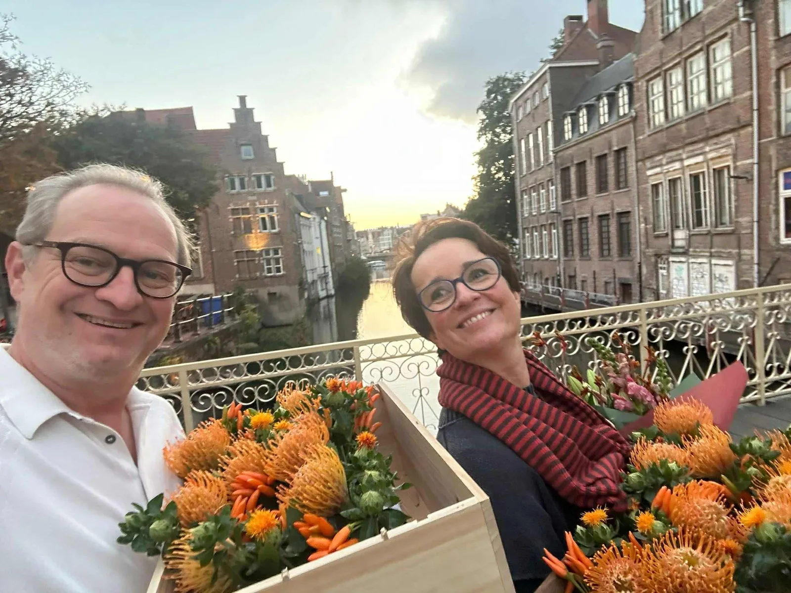

Ons verhaal
Eerst een galerie, nu ook een bloemenatelier.
Meer dan tien jaar geleden begonnen we Ganda Rooms & Suites, ons guesthouse in de Houtbriel. Daaruit groeide een kunstgalerij, en die galerij groeide verder tot Ganda Blooms.
We luisteren eerst, en binden dan. Elk boeket, elk arrangement en elk project moet kloppen met de persoon voor wie het is.
Annik & Kristof
Bloemenlabopleiding bloemsierkunst
McQueensFlower School, Londen